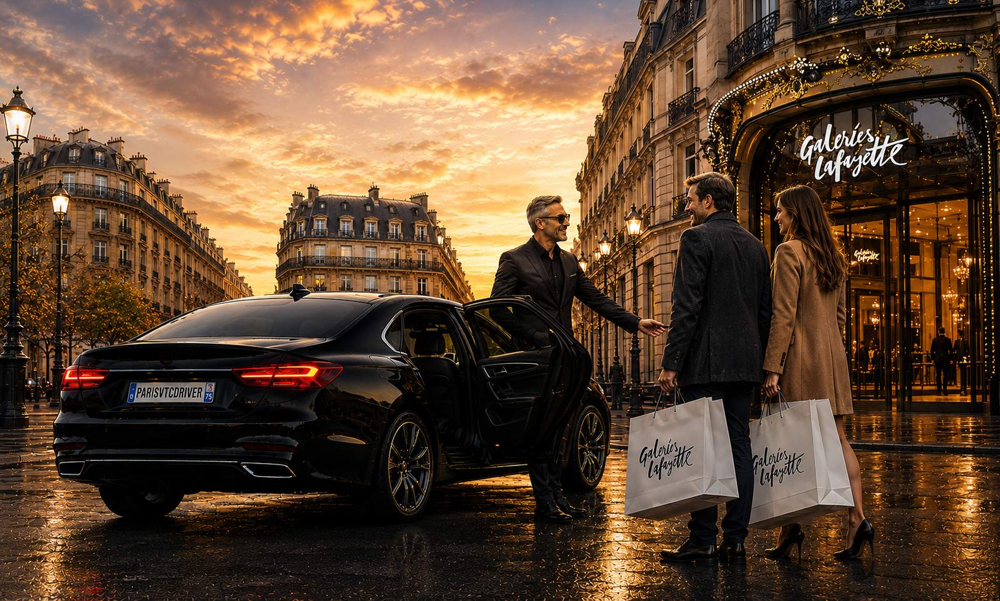

Un chauffeur privé dédié, à votre disposition à l'heure ou à la journée, pour vos rendez-vous d'affaires, votre shopping, vos événements ou votre tourisme à Paris et en Île-de-France.
Vous gardez le même chauffeur et le même véhicule pendant toute la durée réservée : il vous attend, vous déplace d'un point à l'autre et s'adapte à votre programme.
Le même chauffeur professionnel et le même véhicule restent à votre disposition pendant toute la durée réservée.
Autant d'arrêts que nécessaire : rendez-vous, boutiques, restaurants, visites — vous décidez du programme.
Le chauffeur patiente pendant vos rendez-vous ou vos courses : aucune réservation à refaire entre deux trajets.
Berline Mercedes Classe E, Éco Green hybride ou Van Mercedes Classe V selon vos besoins.
Le prix est calculé selon la durée et le véhicule, communiqué et confirmé avant la réservation.
Parfait pour une journée d'affaires, un mariage, un shopping de luxe ou une visite de Paris en toute sérénité.
Choisissez l'heure de début et la durée (quelques heures ou la journée).
Le chauffeur vous rejoint à l'adresse de votre choix à l'heure convenue.
Déplacements, arrêts et attentes : le chauffeur suit votre rythme.
Besoin de prolonger ou de modifier le parcours ? C'est possible sur place.
La mise à disposition se réserve généralement à partir de quelques heures. Indiquez votre besoin dans le devis et nous confirmons la durée et le tarif.
Le tarif dépend de la durée et du véhicule choisi. Il est fixe, communiqué et confirmé avant la réservation via notre devis en ligne.
Oui. Pendant la mise à disposition, vous enchaînez autant d'arrêts que vous le souhaitez ; le chauffeur vous attend entre chaque trajet.
Rendez-vous d'affaires, shopping, mariages et événements, soirées, visites touristiques de Paris : le chauffeur reste à votre service toute la durée réservée.
Paris et toute l'Île-de-France, avec possibilité de déplacements plus longs sur demande.
Un chauffeur dédié pour votre journée à Paris. Découvrez aussi nos transferts aéroport et le pack Disneyland.
Obtenir mon prix & réserverRéservation en ligne 24/7 · Paiement carte ou virement.